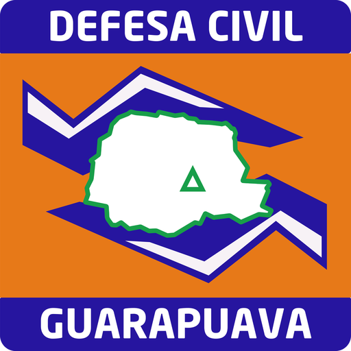
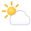
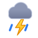
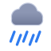
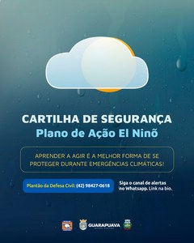

O que é
Um aquecimento natural das águas do Pacífico perto da Linha do Equador, que se repete a cada poucos anos e mexe com o clima do planeta inteiro.

Defesa CivilGuarapuava · Paraná Seguir o canalBaixe o boletim de Guarapuava e acompanhe as fontes que a Defesa Civil usa todos os dias.
PDF com alerta em vigor, previsão dos próximos dias, chuva hora a hora e contatos. Atualizado sozinho a cada 30 minutos.
Baixar PDFPrevisão oficial do Paraná para Guarapuava, com detalhes por hora, radar e satélite.
Abrir simepar.brMapas de risco do estado publicados pela Defesa Civil do Paraná com o SIMEPAR.
Abrir Defesa Civil PRO Oceano Pacífico está mais quente que o normal. Isso muda os ventos e faz as frentes frias e as áreas de instabilidade ficarem mais tempo sobre o Sul do Brasil.
Um aquecimento natural das águas do Pacífico perto da Linha do Equador, que se repete a cada poucos anos e mexe com o clima do planeta inteiro.
No Sul do Brasil, a chuva fica acima da média e os temporais ficam mais frequentes. Com o solo encharcado, cresce o risco de alagamentos, enxurradas, quedas de árvores e deslizamentos.
El Niño aumenta a chance de tempo severo, mas cada dia é diferente. Por isso vale acompanhar o alerta do dia aqui e no canal da Defesa Civil.
de chance de um El Niño muito forte entre novembro de 2026 e janeiro de 2027, segundo a agência climática dos Estados Unidos (NOAA). O SIMEPAR prevê chuva acima da média em todas as regiões do Paraná neste período.
Fontes: SIMEPAR / Agência Estadual de Notícias, CEMADEN e INMET. Mapa ilustrativo, fora de escala.
Orientações da Defesa Civil para antes, durante e depois de temporais.



Marque o que você já tem em casa. A lista fica salva neste aparelho.
Primeiras ações em vendaval, chuva intensa, granizo, tornados e alagamentos, e quando ligar para a Defesa Civil e para os Bombeiros. PDF para guardar ou mandar no WhatsApp.

Siga o canal oficial no WhatsApp e ative o sininho. Os avisos chegam no seu celular assim que são publicados.
Seguir o canal no WhatsAppToque no número para ligar. Em caso de risco à vida, ligue 193.